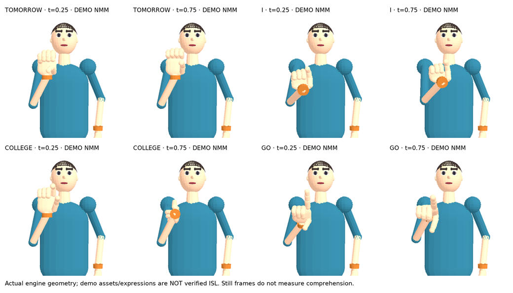
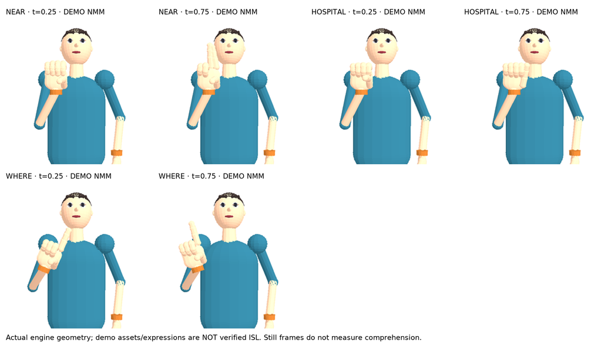
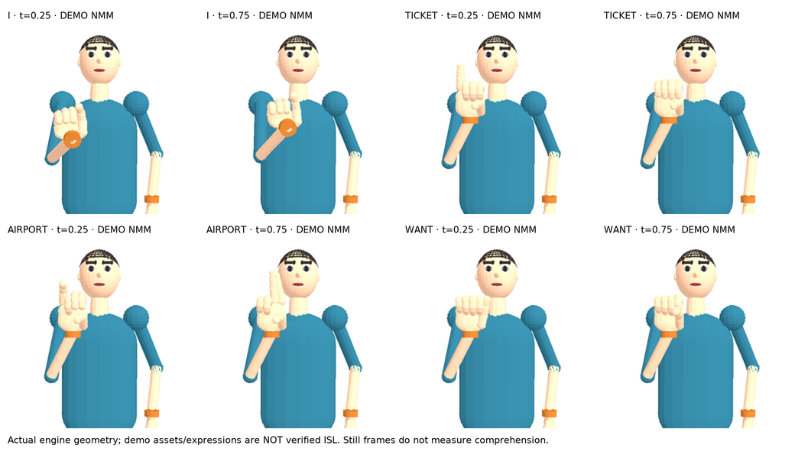
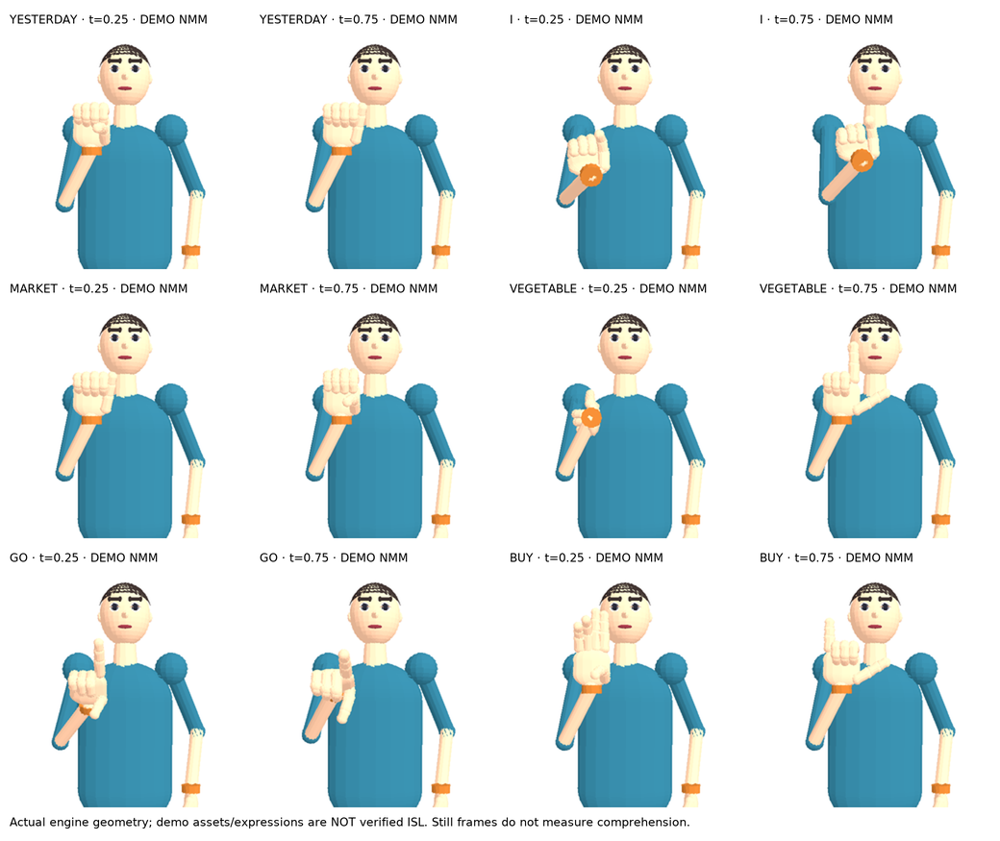
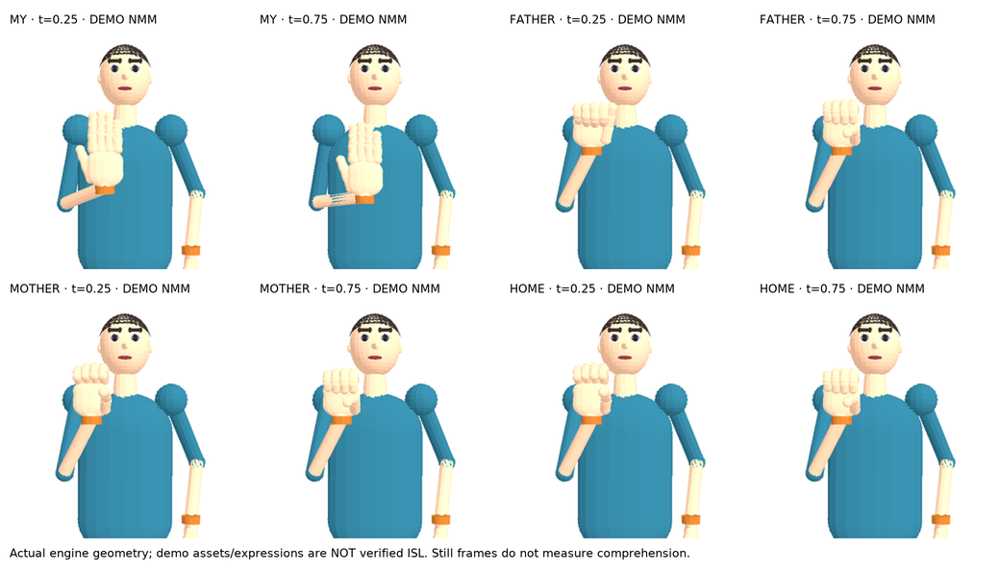

No judgements are prefilled. Review complete motion in the app/linked source assets before judging temporal NMM. Use a private consented reviewer pseudonym; do not add names to this sheet.
Source: I am going to college tomorrow.
English intermediate: I am going to college tomorrow.
Gloss: TOMORROW I COLLEGE GO

Unverified grammar (demo rules): legacy_category_order, legacy_function_word_filter.
Record in responses.csv: acceptable gloss (yes/no/uncertain), correct NMM (yes/no/uncertain), comprehension (1–5), comments; optional corrected reference gloss and aligned numeric NMM JSON.
Source: Where is the nearest hospital?
English intermediate: Where is the nearest hospital?
Gloss: NEAR HOSPITAL WHERE

Unverified grammar (demo rules): legacy_category_order, legacy_function_word_filter. Demo / not verified ISL non-manual markers: question_nmm_pending_review.
Record in responses.csv: acceptable gloss (yes/no/uncertain), correct NMM (yes/no/uncertain), comprehension (1–5), comments; optional corrected reference gloss and aligned numeric NMM JSON.
Source: I want a ticket to the airport.
English intermediate: I want a ticket to the airport.
Gloss: I TICKET AIRPORT WANT

Unverified grammar (demo rules): legacy_category_order, legacy_function_word_filter.
Record in responses.csv: acceptable gloss (yes/no/uncertain), correct NMM (yes/no/uncertain), comprehension (1–5), comments; optional corrected reference gloss and aligned numeric NMM JSON.
Source: Yesterday I went to the market and bought vegetables.
English intermediate: Yesterday I went to the market and bought vegetables.
Gloss: YESTERDAY I MARKET VEGETABLE GO BUY

Unverified grammar (demo rules): demo_function_word_filter_2, legacy_category_order, legacy_function_word_filter.
Record in responses.csv: acceptable gloss (yes/no/uncertain), correct NMM (yes/no/uncertain), comprehension (1–5), comments; optional corrected reference gloss and aligned numeric NMM JSON.
Source: My father and mother are at home.
English intermediate: My father and mother are at home.
Gloss: MY FATHER MOTHER HOME

Unverified grammar (demo rules): demo_function_word_filter_2, legacy_function_word_filter.
Record in responses.csv: acceptable gloss (yes/no/uncertain), correct NMM (yes/no/uncertain), comprehension (1–5), comments; optional corrected reference gloss and aligned numeric NMM JSON.